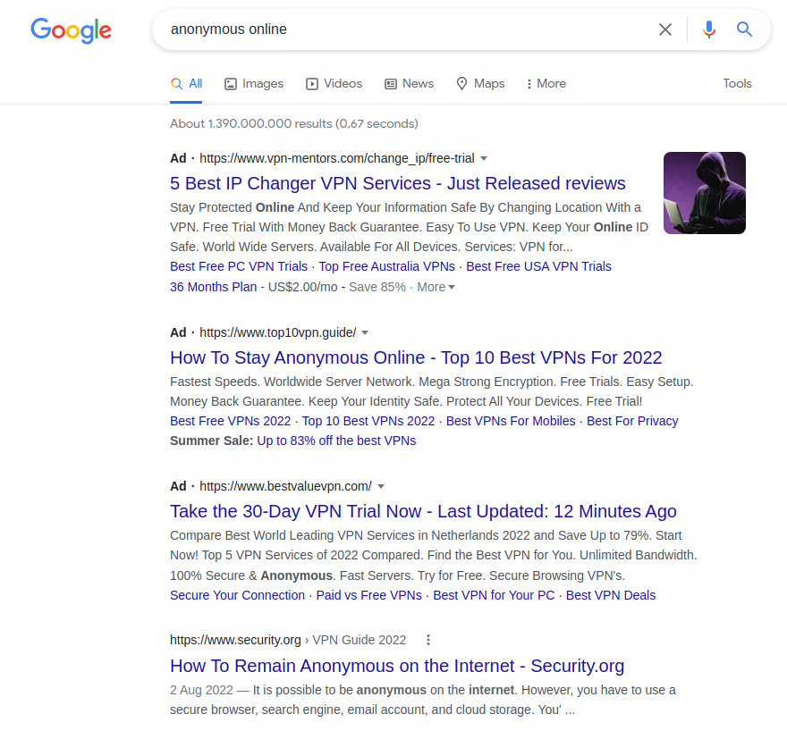

We believe security software like Whonix needs to remain Open Source and independent. Would you help sustain and grow the project? Learn more about our 14 year success story and maybe DONATE!
LanternDocumentationWhonix versus ProxiesPrevious page: LanternIndex page: DocumentationNext page: Whonix versus ProxiesWhonix versus VPNs
 Superior
anonymity - Whonix vs.
VPNs
Superior
anonymity - Whonix vs.
VPNs


- VPNs provide a basic IP hiding feature.
- VPNs can often provide a basic network blocking circumvention feature.
- VPNs don't make you anonymous.
- VPN providers know what you are doing.
- Security experts have a very low opinion of VPNs.
Summary
- VPNs do not even hide visited websites from your internet service provider (ISP)
- VPN software is not designed for anonymity
- VPNs have an unrealistic expectation of users
- See also Whonix homepage VPN comparison summary and Why does Whonix use Tor?
Whonix |
VPNs |
|---|---|
1 trusted party |
|
VPNs don't make you anonymous
Quote [1]:
VPNs are not an anonymity tool and should not be used as such. The VPN provider knows exactly who you are and what you're doing. They can find out who you are from your IP address, payment information, emails, usernames, browsing history etc.
The VPN provider is in full position to log all of your traffic or launch man in the middle attacks.
Due to browser fingerprinting, VPNs are not suitable for being anonymous when browsing the internet.
VPN software normally does not ensure that users have an uniform appearance on the Internet aside from replacing the user's IP address with an IP address provided by the VPN provider; see Data Collection Techniques. By merging the data, this means users are distinguishable and easily identifiable.
Other studies have shown passive browser fingerprinting to be effective at correlating user identities. https://coveryourtracks.eff.org/ 9 VPN based systems in which a user shares the same browser with non-anonymous web surfing are nearly certain to transfer at least one cookie or other session identifier via the VPN session, which is enough for such an observer to de-anonymize the user via correlation with their non-VPN identity.
This can be easily verified by the user using some of the many available Browser Tests. For example when using the popular fingerprint.com, the browser fingerprint will always be the same. The browser fingerprinting can equally be used to track the user similar to an IP address. This is common practice on the internet. The fingerprint.com tracking software alone is used by 12% of the largest 500 websites use fingerprint.com.
Two options:
- A) The user is running the VPN software normally on their host operating system, which most users do. Or
- B) The user is using a virtual or physical VPN-Gateway, which is much less popular.
Even if the user would be using a virtual or physical VPN-Gateway, would consistently always use a VPN and always use a web browser over VPN but never over clearnet, then due to browser fingerprinting it would still be pseudonymous rather than anonymous. And as soon as the user uses its real identity over the VPN, it would not even be pseudonymous.
By comparison, users using Tor Browser inside Whonix, even fingerprint.com can no longer track the user as soon as the user restarts Tor Browser or uses its new identity function.
Traffic Analysis Attacks
Quote [1]:
VPNs are extremely vulnerable to traffic analysis attacks. An adversary can see your connection to the VPN server, connections coming out from the VPN server, compare them and if they look the same, they can take a good guess that it is you.
Tor is also vulnerable to traffic analysis attacks but not to the same extent due to the three hops involved in a regular circuit.
Update: Nowadays in Whonix its four, not three hops, thanks to vanguards.
Update: 3 hops until/if vanguards gets fixed.
Port Shadow Attacks
- Researchers at Citizen Lab presented a paper at the Privacy Enhancing Technologies Symposium 2024 that identifies vulnerabilities in popular VPN software (OpenVPN, WireGuard, and OpenConnect).
- They discovered a new exploit, called "port shadow", which allows attackers to hijack connections, deanonymize users, or redirect traffic.
- The vulnerability affects VPNs running on Linux and FreeBSD.
- Recommendations include using protocols like Shadowsocks or Tor, and VPN providers implementing specific firewall rules to mitigate the risks. Learn more: Vulnerabilities in VPNs
- Anatomy of the attack
- A "port shadow" attack allows an attacker to exploit shared resources on a VPN server, similar to how users on shared WiFi can be vulnerable.
- The attacker, sharing the same VPN server, can craft malicious packets to interfere with another user's VPN connection.
- This can lead to snooping of unencrypted data, port scans, or even connection hijacking, making VPN users vulnerable to other users on the same server.
- The vulnerability stems from the shared nature of ports in VPN servers.
VPNs do not even hide visited websites from your ISP
Any local observer on the network (ISP, WLAN) can make estimates of websites requested over the VPN by simply analyzing the size and timing of the encrypted VPN data stream (Website Fingerprinting Attacks).
A scientific article demonstrating the attack Website Fingerprinting: Attacking Popular Privacy Enhancing Technologies with the Multinomial Naïve-Bayes Classifier had the success over 90% for VPNs.
In contrast, Tor is quite resilient against this attack.
Issue being acknowledged by VPN provider Mullvad:
- https://mullvad.net/en/vpn/daita
- https://mullvad.net/de/blog/daita-defense-against-ai-guided-traffic-analysis
Security Experts Opinion on VPNs
The consensus opinion of security professionals is that VPNs pose more risks than benefits, and it is for this reason Whonix does not endorse their use.
We don't talk about it a lot, but VPNs are entirely based on trust. As a consumer, you have no idea which company will best protect your privacy. You don't know the data protection laws of the Seychelles or Panama. You don't know which countries can put extra-legal pressure on companies operating within their jurisdiction. You don't know who actually owns and runs the VPNs. You don't even know which foreign companies the NSA has targeted for mass surveillance. All you can do is make your best guess, and hope you guessed well.Bruce Schneier, renowned cryptographer and computer security professional
Many VPN providers or products seem to overpromise in terms of where their products and tools work, making extremely bold claims about privacy, security, and anonymity without having had their claims evaluated to the standards found in the anonymity community.
[...]
"Hide your IP and ensure anonymous browsing."
[...]
These claims are unreasonably absolute and they specifically fail to disclose the privileges afforded to the service operators by the design of the system as a whole.research paper vpwns: Virtual Pwned Networks by Security and Privacy Research Lab University of Washington & The Tor Project
The anonymity community often ignores VPN-based solutions, considering them obviously flawed against strong attackers. Nevertheless, these solutions are routinely employed by users who believe the claims of vendors.
in using a VPN, a user essentially transfers trust, say from their network provider, onto the VPN provider
VPNalyzer
Researchers that submit papers to Anonymity Bibliography, Selected Papers in Anonymity do not even consider VPNs. Nowadays most research focuses on Tor.
The Snowden documents describe a successful Internet-wide campaign by advanced adversaries for covert access to VPN providers' servers: VPN and VOIP Exploitation With HAMMERCHANT and HAMMERSTEIN
VPN Software is not Designed for Anonymity
The two most popular VPN applications https://openvpn.net/ and https://www.wireguard.com/ do not even mention anonymity on their respective project homepages.
When searching only the OpenVPN homepage with search query
site:https://openvpn.net anonymity or respectively the only
WireGuard homepage with search query
site:https://www.wireguard.com anonymity there are no
relevant search results on VPNs for anonymity, except for a few
questions by users in the OpenVPN user forum.
There are also no discussions on anonymity related attacks such as browser fingerprinting, website traffic fingerprinting and so forth on these websites.
By comparison, for example the homepage of the The Tor Project or the Whonix project are focused on anonymity.
Whenever a tool is pressed into service to provide data security properties for which it was not originally designed and tested, the potential for subtle security flaws greatly increases. In the particular case of a VPN used as an anonymizing service, the issues seem to arise primarily from the conventional relationship the VPN client software has with the endpoint system's routing table.
But when the goal of the system is to provide strong user anonymity, the requirements become much more stringent. Even a single leaked DNS query or TCP SYN packet may be enough to reveal the user's identity entirely and subject them to consequences much greater than those of a failed connection. Under these new requirements, the method of securing traffic via the endpoint system's routing table is insufficient. It proves vulnerable to a number of generic problems that have the effect of expanding the user's attack surface dramatically.
When the VPN is started, the VPN software modifies the routing table to route the traffic over the VPN. However, when the VPN looses connection, restarts or starts after networking was enabled, there could be clearnet leaks. Automatically started applications or daemons might make clearnet connections before the VPN started and modified the routing table. This is why something like VPN-Firewall is required. [2]
Unrealistic Expectations of User Behavior
An unrealistic set of operational rules is required to stay anonymous when a user is purely using a VPN for anonymity on most host operating systems such as Windows, Linux, macOS.
If the VPN is dysfunctional, the user would likely disable the VPN in order to search the internet for a solution or to contact the support of the VPN provider. When disabling the VPN however, all applications previously using the VPN are now using clearnet, i.e. normal internt connections which uses the users's real IP address, which then allows adversaries to trivially link the VPN and non-VPN (clearnet) sessions. Almost all users will use the same computer to research that solution and won't use a dedicated separate computer only for the purpose of contacting the support.
It is totally unrealistic to expect most users to terminate each and every application (some of them running in the background) beforehand as this requires too much complex technical knowledge, attention and discipline. But if some application keeps running, its connections will continue also without it's IP being cloaked by the VPN. The user's real IP address leaks in such situations and is then correlated with former sessions by server logs.
Enabling/disabling a VPN on the host operating system is similar to
Tor Browser Bundle's (TBB) past toggle model. In the past,
torbutton (which used to be a component of Tor Browser) had an option to
enable anonymous (Tor) use for some websites and to toggle (disable) it
for others and vice versa. This experiment in user experience design
(usability) failed. Through the necessary trial and error in usability
design, the developers of Tor Browser recognized that users can easily
make mistakes, confuse one website for another under the toggle model.
Hence, the toggle feature has been removed from TBB. Nowadays, TBB is an
anonymous-only, Tor-only browser. [3]
If an attacker were simply to deny all traffic to the VPN host by way of Deep Packet Inspection, it may cause the user to disable or restart the VPN client, or the VPN connection may even restart itself with a watchdog timer of some kind. Until the VPN reconnection is complete, the client's routing table momentarily assumes an unsecured default (or even unpredictable) state. Applications the user expects to be secure now simply connect directly.
When using Whonix, there is no documented way to disable its traffic anonymization through use of the Tor anonymity network. It is very difficult to reconfigure Whonix-Workstation™ to connect over clearnet (non-anonymous). Users are unable to do this. [4] Therefore this cannot happen by accident.
VPN Providers Know What You Are Doing
Logging Incidents
A number of VPN providers have already handed over user data in the past. Many VPN adherents are unaware of these precedents. Non-exhaustive list of cases where there have been media reports includes, HideMyAss, IPVanish, PureVPN, see this list on reddit or media reports such as Seven 'no log' VPN providers accused of leaking.
In comparison with Tor with its need to know architecture and multiple server hops, there have never been any logging incidents.
Logging Risk
VPN providers only offer privacy by policy, while Whonix offers anonymity by design.
VPN providers:
- Unlike Tor, VPN hosts can track and save every user action since they control all VPN servers. The administrators and anyone else who has access to their servers, either knowingly or unknowingly, will have access to this information.
- Claims that VPN providers do not log user activity are unverifiable; in fact this claim is exactly what could be expected from a malicious provider.
- Recent research reveals that around one-third of all popular VPN providers are owned by Chinese companies, while others are based in countries like Pakistan, with non-existent or weak privacy laws. [5] The implication is that traffic might be routinely examined in a high percentage of cases, despite corporate promises to the contrary.
- OpenVPN has an IP logging feature which would have to be disabled by No-Log VPN providers. Similar situation for WireGuard. [6] See also VPN Software is not Designed for Anonymity. Much safer would be if the VPN software had no built-in logging feature. Then accidental logging would be impossible.
- The only safe assumption to make is that all VPN providers log activity in order to deflect potential legal actions and to satisfy government demands for (meta)data on 'suspect' users.
Whonix:
- Whonix uses the Tor anonymity network (see also vanguards).
- Due to Tor's organisational separation and its need to know architecture the logging risk is much lower.
- There is no single person or legal entity that if logging was enabled could de-anonymize the user.
- The routing algorithm of the Tor software chooses multiple servers (Tor relays) and multiple countries (different jurisdictions) for connections through the Tor anonymity network (Tor circuit).
- By Tor's design, each Tor relay server must be hosted by a different organisation or person. [7]
- In Whonix, all 3 server hops (Tor relays) would have to be colluding.
- It is also unknown if any of the 3 hops (Tor relays) is keeping logs. However, one malicious node will have less impact. The entry guard will not know where you are connecting to, thus it is not a fatal problem if they log. The exit relay will not know who you are, but can see any unencrypted traffic -- this is only a problem if sensitive data is sent over this channel (which is unrecommended). Tor's model is only broken in the unlikely (but not impossible) event that an adversary controls all four relays in the circuit. [8] Tor distributes trust, while using VPN providers places all trust in the policy of one provider.
- Since Tor is designed for anonymity, the Tor software run by Tor relays has no IP logging feature that could be turned on. [9]
- Malicious Tor relays would have to add an IP logging feature themselves. Therefore there is no risk for Tor relays to accidentally keep IP logs.
Issues with VPNs
There are a number of serious security and anonymity risks in wholly relying on VPNs.
Category |
Discussion |
|---|---|
Breaches |
VPN provides got breaches by advanced adversaries. Ars Technica: Hackers steal secret crypto keys for NordVPN.:
|
Clearnet Risk |
It is trivial to trick client applications behind a VPN to connect in the clear according to research paper vpwns: Virtual Pwned Networks by Security and Privacy Research Lab University of Washington & The Tor Project. |
Design |
VPNs do not magically improve security; they are just a 'glorified proxy'. Since they can observe all user traffic, there is nothing preventing them from using that data for any purpose they like, including logging. [10] 'Honeypot' or malicious providers might be ubiquitous. [11] |
Identity Correlation |
VPNs lack stream isolation. All connections originating from the same user (operating system updates, chat, all visited websites) are routed to the same IP. Therefore the VPN provider could correlate all user online activity. In contrast, Whonix and Tor implement stream isolation. |
Static Routing |
VPNs lack route randomization. All traffic is always routed to the same server using the same IP address. Tor has route randomization. |
Malware |
|
Multi-hop VPNs |
Advertisements for double, triple or multi-hop VPNs are meaningless. For example as in case of DoubleVPN, quote Police seize DoubleVPN data, servers, and domain:
Unless the user builds their own custom VPN chain by carefully choosing different VPN providers, operated by different companies, then they are fully trusting only one provider. But even in that case, the user would still lack route randomization. |
Security |
|
Software |
|
TCP Timestamps |
The fundamental design of VPN systems means they do not normally filter or replace the computer's TCP packets. Therefore, unlike Tor they cannot protect against TCP timestamp attacks. |
Trust |
VPN providers represent a single point/entity of potential failure. Unlike Tor which distributes trust across multiple relays, VPN adherents must trust the provider does not:
|
Payment Link Risk |
|
VPN Configuration |
If VPN software is run directly on the same machine that also runs client software such as a web browser, then Active Web Contents can read the real IP address. This can be prevented by utilizing a virtual or physical VPN-Gateway or a router. However, be aware that active contents can still reveal a lot of data concerning the computer and network configuration. |
The law of triviality / bikeshedding
The potential positive or negative effects on anonymity are being controversially debated.
The law of triviality / bikeshedding applies to VPNs. While VPNs are frequently discussed, related privacy issues receive much less attention, including: browser fingerprinting, website traffic fingerprinting, TCP Initial Sequence Numbers Randomization (tirdad); Keystroke and Mouse Deanonymization (kloak); guard discovery and related traffic analysis attacks (vanguards); Time Attacks (sdwdate); and Advanced Deanonymization Attacks. See also: Anonymity Bibliography, Selected Papers in Anonymity.
Use Case Exceptions
There are some possible use cases that might warrant a VPN provider:
- A potentially 'hostile' network must be used, like those found in public airports (WiFi access points) and where ISPs have a questionable record of man-in-the-middle attacks.
- It is necessary to hide an IP address from non-government-sanctioned adversaries. [12]
- Circumvention of geo-blocking although that is getting harder. [13]
If a VPN is essential in your circumstances for whatever reason, setting up one's own Virtual Private Server (VPS) could be considered. There is no guarantee that a rented server is less likely to be malicious than a standard VPN provider.
Criteria for Reviewing VPN Providers
The following list of criteria might be useful for a user reviewing the quality of various VPN providers.
Criteria |
Category |
Quality Impact |
|---|---|---|
Place of incorporation |
Trust |
Country with strong privacy laws |
incorporation verifiable [14] |
Trust |
Trust but verify the place of incorporation is truthfully documented. |
ownership / shareholders |
Trust |
|
known spokesperson |
Trust |
|
third party audited |
Trust |
|
popularity in external VPN reviews |
Trust |
|
overall popularity online |
Trust |
|
known cases of malicious activity |
Trust |
|
long term track record |
Trust |
|
no log policy |
Anonymity |
|
own infrastructure |
Anonymity |
VPN providers that run their own servers rather than relying on shared infrastructure exclude the risk of their hosting provider logging data or snooping around. |
has a free service or limited use free service |
Anonymity |
Free services are easiest to test and without payment trail can be more anonymous. |
accepts Bitcoin payments |
Anonymity |
Payments using Bitcoin are easier (but still hard) to anonymize. |
accepts other anonymous cryptocurrency payments like Monero |
Anonymity |
More anonymous than Bitcoin. |
JavaScript-free ordering possible |
Anonymity |
Less ability for the VPN provider (web service provider) to fingerprint the user's browser |
anonymous sign-up allowed |
Anonymity |
Self-explanatory. |
VPN client software is Freedom Software |
Security |
|
can be used with Freedom Software like OpenVPN |
Security |
|
Freedom Software server source code |
Security |
|
private (non-shared), unique IP address(es) |
Functionality |
Unique IP address(es) have a higher chance of not being banned by remote websites due to previous abuse by other users sharing the same IP address. |
can be connected to by TCP |
Functionality |
Useful in some restrictive networks. |
can be connected to by UDP |
Functionality |
Speed. |
supports tunneling TCP |
Functionality |
Most if not all VPN providers have this functionality. |
supports tunneling UDP |
Functionality |
Required for some applications such as Voice over IP (VoIP). |
VPN with Remote Port Forwarding (for Hosting Location Hidden Services) |
Functionality |
Only useful if the user intends to host location hidden services. |
popularity in Whonix forums |
usability |
Ease of setup in combination with Tor |
Conclusion
The host of security considerations suggest that relying purely on a VPN service for anonymity is unrealistic.
Whonix is more powerful for anonymity than a VPN.
Rationale
This chapter explains the rationale for this wiki chapter. The reader may skip this section.
This page risks stating things that are obvious, but the question must be asked: "Obvious to whom?". The above points may only be common sense to developers, hackers, geeks and other people with technological skills. It is useful to sometimes read usability papers or the feedback from people who do not post on mailing lists or in forums.
Why compare Whonix with VPN providers? Aren't VPN providers in a totally different category than Whonix or Tor? No.
- Whonix / Tor are anonymity tools.
- VPNs don't make you anonymous but are often advertised or perceived as anonymity tools by many users. For examples of that, please press expand on the right side.
Examples of VPNs being advertised as anonymity tools:
- A
popular VPN provider is advertising [15] quote:
Best VPN for privacy and anonymity
- A
search query for
anonymous vpnon Google Play store. - Search query for
anonymous onlineon the Google search engine. The first 3 search results are VPN related advertisements.
Figure: Searching Google for search term "anonymous online" (23 September 2022)

The fact that VPNs are often perceived as anonymity tools has also been confirmed in various research papers:
- Quote
VPNalyzer:Worryingly, we find that users have flawed mental models about the protection VPNs provide, and about the data collected by VPNs.
Alarmingly, we find the highest degree of misalignment in the user's trust in the VPN recommendation and review ecosystem. Most providers agreed that the review ecosystem is far from reliable and largely motivated by money. However, users are completely unaware of this, and rely on them believing they are trustworthy.
Furthermore, 118 users also write-in additional reasons why they use VPNs (Appendix B.1), and we find that privacy (60.2%, 71 of 118; from ISP, tracking, surveillance, ad targeting) , security (12.71%, 15), being offered the service (10.1%, 12; by a company, with a purchase), during travel (7.6%, 9), and anonymity (2.5%, 3) are the main reasons for use.
Malicious Marketing (6/9): Many providers mention several issues, that we term as malicious marketing, including the use of affiliate marketing, preying upon users' lack of knowledge, and overselling of service including selling anonymity even though that is not a VPN guarantee.
To understand users' threat models when it comes to using a VPN, we first ascertain whether users use a VPN to secure their online activities, and if yes, who they want to protect it from. Notably, 91.5% (1145 of 1,252) of users indicate they use VPNs for securing or protecting their online activity. When exploring who they aim to protect from, we find that hackers/eavesdroppers on open WiFi networks (83.9%, 1,051 of 1,252), advertising companies (65.4%, 819), and internet service providers (ISP) (46.9% 587) are the top three responses. Notably, only ≈30% of users are concerned about the U.S. government or other governments. This is intriguing because post Snowden's surveillance revelations in 2014, more users moved towards privacy tools such as VPNs and anonymity tools such as Tor [41]. Our results indicate a shift in user's attitudes, and show a growing concern towards corporate and advertisement surveillance. This shift could have been influenced by the security advice users are exposed to, as shown in prior work [1] that finds that YouTubers often cite "the media" and "hackers" as common adversaries.
- Quote research paper vpwns:
Virtual Pwned Networks by Security and Privacy Research Lab
University of Washington & The Tor Project:
The anonymity community often ignores VPN-based solutions, considering them obviously flawed against strong attackers. Nevertheless, these solutions are routinely employed by users who believe the claims of vendors.
- Quote research paper Awareness,
Adoption, and Misconceptions of Web Privacy Tools
[16]:
They found that 40% of participants used VPNs for security and privacy, and that about one-third of participants thought VPNs guaranteed privacy, anonymity, and safety from tracking.
For examples how highly technical user groups tend to lose contact with non-technical users as far as misconceptions, see also Rationale for the wiki page Tips on Remaining Anonymous.
VPNs in Combination with Tor
Whether it is worth combining Tor with a VPN -- either as pre-Tor-VPN (user → VPN → Tor) or as post-Tor-VPN (user → Tor → VPN) -- is a controversial topic and discussed on the Tor plus VPN page. If this configuration is preferred, it is easy to set up with Whonix; see Tunnel Support.
Sources
vpwns
vpwns: Research paper vpwns:
Virtual Pwned Networks by Security and Privacy Research Lab
University of Washington & The Tor Project.
VPNalyzer
VPNalyzer: VPNalyzer
VPNalyzer: Crowdsourced Investigation into Commercial VPNs research
paper "All of them claim
to be the best": Multi-perspective study of VPN users and VPN
providers by a group of
computer science researchers at the University of Michigan.
Other Sources
See footnotes.
See Also
- Why does Whonix use Tor
- Tor vs. Proxies, Proxy Chains
- https://web.archive.org/web/20230205050050/https://matt.traudt.xyz/posts/2019-10-17-you-want-tor-browser-not-a-vpn/
License
Appreciation is expressed to JonDos (Permission). This wiki page contains content from the JonDonym documentation Other Services page.
Footnotes
- https://obscurix.github.io/vpns.html
- https://superuser.com/questions/1725438/how-can-i-prevent-wireguard-from-leaking-traffic
- https://blog.torproject.org/toggle-or-not-toggle-end-torbutton/
- * Nobody has posted instructions how to do that yet. ** https://forums.whonix.org/t/temporary-bypass-whonix-gateway/415 ** https://forums.whonix.org/t/using-whonix-gateway-to-route-a-lan-connection-not-through-tor/14808 * Highly technical users might be able to through extensive modifications of Whonix-Gateway™ but that's besides the point and serves no purpose.
- https://www.computerweekly.com/news/252466203/Top-VPNs-secretly-owned-by-Chinese-firms
- * https://www.reddit.com/r/WireGuard/comments/e408sz/how_do_i_enforce_that_wireguard_leaves_zero_logs/ * https://news.ycombinator.com/item?id=18923890
- Organisations and people may host multiple Tor relays, however they must, they ought to disclose that these belong to the same "family". This is to make it possible for Tor's routing algorithm to pick 4 relays, each from a different "family".
- Or if they are a global passive adversary capable of monitoring the traffic between all the computers in a network at the same time.
- https://tor.stackexchange.com/questions/21721/do-relay-and-entry-nodes-keep-logs
- It could be argued these services truly only exist to sell overpriced bandwidth, with flimsy promises made to attract gullible customers.
- It is logical that governments would set up providers in this manner to attract citizens who have a greater interest in protecting their privacy, since that traffic is deemed more interesting for intelligence purposes.
- In this case, the VPN provider will still be able to link all activities to the same user.
- * https://arstechnica.com/gadgets/2021/08/netflix-is-adding-residential-ip-addresses-to-its-vpn-blocklists/ * https://torrentfreak.com/netflix-cracks-down-on-vpn-and-proxy-pirates-150103/
- Such as Companies House for the United Kingdom.
- archive.ph
- https://usableprivacy.org/static/files/story_popets_2021.pdf
Categories: Design